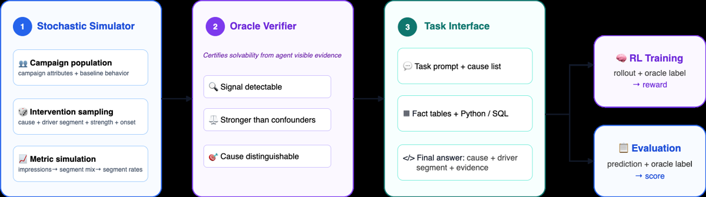
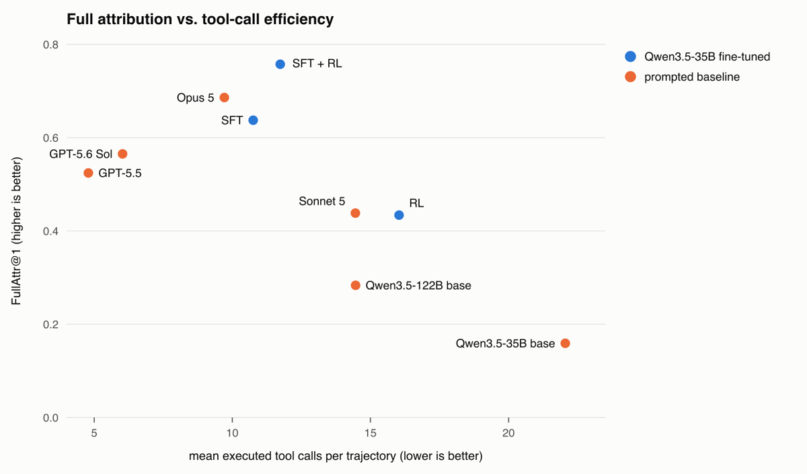

TL;DR : plutôt que de chercher un vérifieur pour un problème existant, on inverse la génération — on tire une intervention cachée, on la pousse dans un simulateur, on génère les données qu'elle aurait produites ; l'intervention devient l'oracle, donc le reward, à coût d'annotation nul.
Claim principal : sur un env de diagnostic publicitaire à 12 causes racines et attribution fine de segment, SFT (1 200 trajectoires rejection-sampled) puis GRPO avec ce reward synthétisé porte Qwen3.5-35B-A3B de 0.159 → 0.637 → 0.757 FullAttr@1 sur 235 épisodes held-out, au-dessus du meilleur baseline prompté (Claude Opus 5, 0.686) et très au-dessus de Qwen3.5-122B prompté (0.283) [Abstract ; Tab. 1]. Les auteurs en concluent que la contrainte liante est l'accès à un signal d'entraînement objectif, pas l'échelle du modèle.
⚠️ Le claim qui m'intéresse n'est pas le chiffre mais la méthodologie generative-inversion : la même opération qui fabrique un problème difficile fabrique sa vérité terrain [§1, §5].
placement=TOP_OF_SEARCH, ou geo=US ∧ device=mobile), signal strength, onset profile (immédiat, retardé, progressif).
3. Stage 3 — simulation des métriques : impressions totales ~ Poisson(μ_i · η_t · V_{i,t}) ; mix de segments ~ Dirichlet-Multinomial(N, α·π) avec π = Normalize(w_i ⊙ R_{i,t}) ; taux par segment θ^m = θ̄^m · Q^m_i · F^m_{i,g,t} pour m ∈ {CTR, CVR, CPC} [Éq. 1]. Trois canaux d'effet : volume total, allocation inter-segments, taux par segment.ds) [Tab. 4, App. A.1] :
| Table | Grain | Champs |
|---|---|---|
| daily_campaign | campagne-jour | identifiants + catégorie ; budget, spend, impressions, clicks, orders, sales, page views, brand searches |
| segment_daily | segment-jour | identifiants + catégorie ; ad product, targeting type, match type, placement, price band, audience, device, geography ; métriques delivery/engagement/conversion |
| budget_log | campagne-jour | advertiser/campaign id, budget, spend |
| inventory | campagne-jour | fraction de produits en stock |gt_episode (cause injectée, segment affecté, strength, pattern temporel, nb de dimensions), gt_evidence (table source, métrique, segment, direction, variation vs baseline), gt_validation (checks de détectabilité et d'élimination des confondeurs). Exclues à la construction de la base visible.decision avec root_cause non vide et driver_segments optionnel (liste de paires dimension–valeur ; omis/null pour campaign-wide, segment-mix, no-signal), plus une liste evidence et un explanation textuel [App. A.2].r_fmt, parse failure ⇒ r_attr=0) [§3.1] et de l'éval (double parser, App. C.2) ; un slice mal formé est traité comme absent et ne peut donc pas obtenir la full attribution.Deux objets distincts, à ne pas confondre : (a) l'oracle verifier, qui filtre les épisodes à la construction ; (b) le reward, qui compare la réponse finale au label caché.
Le papier formule la tension : un épisode doit être solvable (signal récupérable), non trivial (le simple pattern-matching de signature ne suffit pas) et réaliste (métriques corrélées, confondeurs présents). Résolution : séparer génération et acceptation. - Le vérifieur connaît la cause injectée mais ne lit que les données visibles par l'agent. Il ne résout pas l'épisode. - Checks : (1) la signature attendue est présente au bon niveau — métriques campagne pour campaign-wide, variation de part d'impressions pour segment-mix, variation dans le segment injecté pour segment-specific ; (2) pour onsets retardés/ramping, test additionnel sur la seconde moitié de la fenêtre, pour ne pas rejeter un signal tardif dilué dans la moyenne ; (3) les signaux segment-specific doivent dépasser leur propre variation temporelle de baseline, avec un SNR minimum de 1 ; (4) chaque cause alternative est testée contre les mêmes données et doit être éliminable par une différence de signal level, table source, dimension affectée, métrique primaire ou direction d'une métrique compagnon ; (5) les épisodes no-signal ne sont retenus que si les fluctuations observées ne réalisent la signature d'aucune autre cause. - Rejet si signal absent ou si une alternative concurrente ne peut être éliminée. - Fiabilité du vérifieur : non mesurée. Pas de taux d'acceptation rapporté, pas d'audit humain d'un échantillon d'épisodes acceptés, pas de mesure de faux positifs/négatifs du filtre. ⚠️ Le seuil SNR=1 et les règles d'élimination sont des choix non justifiés empiriquement dans le papier.
r = w_attr·r_attr + w_full·r_full + w_fmt·r_fmt, poids ≥ 0 sommant à 1, donc r ∈ [0,1].
- r_attr = 1{ĉ = c*} · r_slice [Éq. 3] — gating par la cause : cause fausse ⇒ attribution nulle, quelle que soit la qualité du slice.
- r_slice = α + (1−α)·J(Ẑ, Z*) [Éq. 4], J = Jaccard sur des ensembles de paires dimension–valeur ; r_slice = 1 pour campaign-wide, segment-mix, no-signal.
- r_full = 1{r_attr = 1} ∈ {0,1} : cause correcte ET slice exactement égal à l'oracle.
- r_fmt ∈ {0,1} : réponse finale parseable. Échec de parse ⇒ r_attr = 0.
- Valeurs : (w_attr, w_full, w_fmt) = (0.65, 0.30, 0.05), α = 0.5 [§3.1].
- Granularité : purement outcome, pas de process reward. Crédit partiel via Jaccard, complété par un terme binaire pour re-créer la pression sur l'exactitude.
- Point crucial : l'evidence produite par l'agent est collectée pour interprétabilité et analyse d'erreur mais n'entre pas dans le reward [§3.1]. Idem : aucun terme récompensant l'exploration, le nombre d'appels d'outil, la longueur, ou la diversité des requêtes. Pas de pénalité de coût non plus.
- Type : exact match sur un label caché, étendu par un set-overlap. Ni LLM-as-judge, ni reward model, ni rubrique. Les auteurs argumentent explicitement contre le juge LLM (le target reste ambigu, et un juge appris ouvre des surfaces de hacking) [§1].
- Fiabilité du reward : par construction exacte — il compare à l'intervention effectivement injectée. Pas d'accord humain à mesurer. ⚠️ La question se déplace entièrement sur la validité du simulateur (un label exact sur un monde faux reste un label exact), que le papier ne teste contre aucune donnée réelle.
- Robustesse / attaque : non testée. Les tables oracle sont exclues de la base visible [App. A.2], ce qui bloque le hack le plus évident (lire le label). Aucune red-team du reward.
[0.8, 1.28] est la signature clip-higher de DAPO.Le papier ne contient pas de section « failure modes » mais en documente quatre, chiffrés.
no_signal prédit dans 49/100 trajectoires no-signal sauvegardées contre 76/100 après SFT [§4.5]. Correction : aucune. Les auteurs qualifient cela de « trade-off between stronger attribution and avoiding false-positive diagnoses » [§4.5]. ⚠️ Mon évaluation : ce n'est pas un trade-off inévitable, c'est une conséquence directe du design du reward — abstenir correctement rapporte r_attr=1, r_full=1 comme n'importe quelle autre cause, mais les épisodes no-signal sont rares (20/235 en test) et le gradient pousse vers la politique qui maximise l'attribution sur la masse. C'est la forme que prend le reward hacking ici : exploiter le prior de classe plutôt que de calibrer. Claude Opus 5 prompté conserve 0.87 sur ce sous-ensemble [Tab. 3] — l'entraînement a donc détruit une capacité que le prompting préservait.r_slice = 0.5 + 0.5·0.5 = 0.75 sans risque. Détection : ablation graded reward vs + r_full. Correction : ajout du terme binaire r_full (poids 0.30) ⇒ 2D 0.00 → 0.27, 1D 0.67 → 0.92, overall 0.596 → 0.757 [Tab. 2]. ⚠️ C'est le cas de hacking le plus propre et le plus généralisable du papier : un reward à crédit partiel sur un ensemble est un reward qui paie la réponse incomplète.ad_quality_degradation, 24 prédisent competitive_pressure [§4.5] — deux causes dont les signatures diffèrent par la dimension affectée (device vs geo) et la direction des impressions [Tab. 1]. Détecté par analyse des trajectoires, non corrigé.r_fmt (poids 0.05) ne suffit pas à lui seul à enseigner le format depuis le modèle de base.Reward hacking classique (lecture du label, exploitation du vérifieur) : non observé et non recherché. Crédible structurellement : les tables gt_* sont physiquement absentes de la base DuckDB visible [App. A.2], et le reward ne lit que deux champs de la réponse finale. ⚠️ Un angle non testé : rien n'empêche un agent d'apprendre les régularités du simulateur plutôt que le raisonnement diagnostique (par ex. inférer la cause de la seule distribution a priori des causes conditionnée à un marqueur superficiel). Sans éval hors simulateur, ce mode est indétectable par construction — et c'est la faiblesse de fond de toute l'approche.
Comportement émergent positif : la politique entraînée n'explore pas davantage. SFT→RL fait 11.73 appels d'outil en moyenne contre 22.05 pour le base 35B prompté, et le RL n'ajoute que +0.98 appel au-dessus du SFT (10.75) [§4.6]. Les auteurs concluent que les gains ne s'expliquent pas par « plus d'appels d'outils ».
slime, Megatron-LM pour l'optimisation, SGLang pour l'inférence de rollout, Ray pour l'orchestration [App. B.1].| Chiffre annoncé | Où il est annoncé | Source dans le papier | Verdict |
|---|---|---|---|
| « 12 root causes » | Abstract, §1, §2.3 | Tab. 1 : 4 campaign-wide + 3 segment-mix + 4 segment-specific + 1 no-signal = 12 | confirmé (mais l'une des 12 est « no signal » : 11 causes + abstention) |
| test set de 235 épisodes | Abstract, §1, §4.1 | Tab. 3 : 30+21+115+49+20 = 235 | confirmé |
| « 164 episodes require a driver slice, incl. 49 with 2 dimensions » | §4.1 | Tab. 3 : 115 (1D) + 49 (2D) = 164 | confirmé |
| Claude Opus 5 = 0.686 FullAttr@1, meilleur baseline prompté | Abstract, §1, §4.3 | Tab. 1 : 0.686, devant GPT-5.6 Sol 0.565 | confirmé |
| SFT : 0.159 → 0.637 | Abstract, §1, §4.3 | Tab. 1 | confirmé |
| RL : 0.757 | Abstract, §1, §4.3 | Tab. 1 et Tab. 2 | confirmé |
| « +12.0 points de pourcentage » (SFT → SFT+RL) | §4.3, §4.6 | 0.757 − 0.637 = 0.120 | confirmé |
| Qwen3.5-122B prompté = 0.283 | §1, §4.3 | Tab. 1 | confirmé |
| « outperforming all evaluated prompted baselines » | Abstract, §1, §5 | Tab. 1 : vrai sur FullAttr@1 (0.757 vs 0.686) et FullAttr@5 (0.851 vs 0.809) | confirmé sur l'agrégat, mais ⚠️ sur-généralisé si lu comme une domination : Opus 5 reste devant sur les slices 2D (0.33 vs 0.27) et sur no-signal (0.87 vs 0.49) [Tab. 3] |
| « 11.73 tool calls vs 22.05 for the prompted 35B base » | §1, §4.6 (Abstract : « substantially fewer ») | §4.6 et Fig. 2 | confirmé — ⚠️ mais la baisse vient du SFT (22.05 → 10.75), le RL ajoute +0.98 |
| « access to a scalable, objective training signal can be a more important constraint than model scale alone » | Abstract, §1, §5 | Comparaison 35B post-trained (0.757) vs 122B prompté (0.283) [Tab. 1] | sur-généralisé : une seule famille de modèles, un seul env, et le 122B n'est jamais entraîné — la comparaison oppose post-training à prompting, pas signal à échelle |
| « without human attribution labels or an LLM judge » | §1 | Vrai pour le reward [§3.1] | confirmé, ⚠️ mais le SFT consomme 1 200 trajectoires d'un LLM frontier (Claude Opus 4.8) avec hints humains sur les signatures [§3.3] — le pipeline complet n'est pas exempt de supervision externe |
| Modèle | Cause@1 | Jaccard | FullAttr@1 | FullAttr@5 | No-Signal | Parsed |
|---|---|---|---|---|---|---|
| Qwen3.5-35B (base) | 0.184 | 0.596 | 0.159 | 0.370 | 0.41 | 0.53 |
| + SFT | 0.685 | 0.958 | 0.637 | 0.762 | 0.76 | 1.00 |
| + RL (from base) | 0.471 | 0.913 | 0.434 | 0.711 | 0.28 | 0.68 |
| + SFT → RL | 0.823 | 0.928 | 0.757 | 0.851 | 0.49 | 1.00 |
| Qwen3.5-122B | 0.296 | 0.842 | 0.283 | 0.434 | 0.78 | 0.88 |
| Claude Opus 5 | 0.764 | 0.913 | 0.686 | 0.809 | 0.87 | 0.99 |
| GPT-5.6 Sol | 0.635 | 0.852 | 0.565 | 0.719 | 0.30 | 0.99 |
| GPT-5.5 | 0.581 | 0.893 | 0.524 | 0.643 | 0.61 | 0.99 |
| Claude Sonnet 5 | 0.472 | 0.899 | 0.438 | 0.607 | 0.85 | 1.00 |
[Tab. 1] — estimateur pass@k non biaisé 1 − C(n−c,k)/C(n,k), n=5 [App. C.1]. |
Décomposition par type [Tab. 3] : campaign-wide (N=30) SFT 0.99 / RL 0.95 / Opus 0.95 ; segment-mix (N=21) 0.98 / 1.00 / 0.98 ; 1D slice (N=115) 0.71 → 0.92 (Opus 0.68) ; 2D slice (N=49) 0.04 → 0.27 (Opus 0.33) ; no-signal (N=20) 0.76 → 0.49 (Opus 0.87). Le gain du RL est donc concentré sur les slices 1D, payé par l'abstention.
Récupération de la 2e dimension (device) parmi les trajectoires cause-correctes : 66/94 pour SFT→RL, contre 14/39 (SFT) et 12/31 (RL-from-base) [§4.5].
Aucun test OOD. Aucun transfert mesuré. Tout — train, validation, test — sort du même simulateur avec la même taxonomie de 12 causes. Pas de causes held-out, pas d'autre domaine, pas d'évaluation sur données publicitaires réelles, pas de test sur un benchmark externe de data-analysis. Les auteurs listent « held-out root causes » et « domains such as software operations and data-quality diagnosis » comme travaux futurs [§5]. ⚠️ C'est la limite majeure du papier : on ne sait pas si la politique a appris une procédure diagnostique ou les régularités d'un simulateur.
| Condition | Overall | 1D | 2D | No-Signal |
|---|---|---|---|---|
| SFT only | 0.637 | 0.71 | 0.04 | 0.76 |
| SFT → RL, reward gradué seul | 0.596 | 0.67 | 0.00 | 0.64 |
SFT → RL, + r_full |
0.757 | 0.92 | 0.27 | 0.49 |
SFT → RL, + r_full + KL (0.005, k3) |
0.724 | 0.92 | 0.16 | 0.30 |
RL from base, + r_full |
0.434 | 0.51 | 0.03 | 0.28 |
Ce qui compte vraiment : (1) le terme binaire r_full — sans lui, le RL est en dessous du SFT (0.596 < 0.637) ; c'est l'ingrédient qui fait exister le résultat ; (2) l'initialisation SFT — +0.323 absolus (0.434 → 0.757) à recette identique ; (3) le KL nuit (−0.033 overall, −0.11 sur 2D, −0.19 sur no-signal) — cohérent avec une politique qu'on veut éloigner franchement d'un prior SFT trop prudent.
Un seul point d'échelle entraîné (35B-A3B). L'unique comparaison d'échelle oppose un 35B post-trained à un 122B prompté [Tab. 1] — ce n'est pas une courbe de scaling. Effet du nombre de tâches (5 000) ou du compute RL : non étudié.
Re-scoring des mêmes trajectoires avec un parser à schéma exact : SFT 0.637 → 0.637, SFT→RL 0.757 → 0.757 (aucun effet), base 0.159 → 0.140, RL-from-base 0.434 → 0.317, Opus 5 0.686 → 0.665. Bon réflexe méthodologique : le résultat principal ne dépend pas du parser ; les modèles non-SFT, eux, sont sensibles.
xhigh, plus un 122B de la même famille, tous sur la même interface et le même parser [App. C.1].r_full, initialisation, KL, à recette d'entraînement identique [Tab. 2, App. B.3].Verdict : plausible mais fragile. Le mécanisme est bien isolé (l'ablation r_full est convaincante et contre-intuitive), les hyperparamètres sont complets, les baselines sérieuses. Mais : une seule seed, un seul modèle, zéro évaluation hors simulateur, zéro release, auteurs sans affiliation. Le papier démontre qu'on peut entraîner par RL sur un reward synthétisé par inversion générative ; il ne démontre pas que la politique obtenue sait diagnostiquer quoi que ce soit en dehors de son simulateur. À répliquer sur un second domaine avant d'en tirer une loi.

Ce qu'il faut voir : l'inversion du sens habituel de la génération de tâches. On ne part pas de données dont on cherche la cause ; on tire l'intervention, on simule les observations qu'elle produit, on garde l'intervention comme label caché, et le vérifieur oracle — qui ne lit que les données visibles par l'agent — décide d'admettre ou non l'épisode. C'est ce troisième bloc (l'acceptation) qui porte tout le design : c'est lui qui garantit simultanément solvabilité, non-trivialité et présence de confondeurs [§2.5, App. A.3].
Ce qu'il faut voir : les points bleus (variantes Qwen3.5-35B fine-tunées) vs orange (modèles promptés) ; mieux = en haut à gauche. Le base 35B prompté est en bas à droite (0.159 à 22.05 appels) : il explore beaucoup et conclut mal. Le SFT le déplace brutalement vers la gauche (10.75 appels) et vers le haut (0.637), et le RL monte ensuite presque verticalement (+0.98 appel pour +12.0 points) [§4.6]. Lecture importante pour un env : l'efficacité d'exploration vient de l'imitation (SFT), pas du reward — aucun terme du reward ne pénalise ni ne récompense le nombre d'appels [§3.1]. Le RL-from-base, à 16.04 appels pour 0.434, montre le contraire : sans warm start, le RL dérive vers plus d'appels pour moins de résultat.| Ingrédient | Choix du papier | Équivalent juridique | Transfert | Ce qui manque |
|---|---|---|---|---|
| Source des tâches | Inversion générative : tirer l'intervention cachée, simuler les observations [§2.2] | Tirer la règle/qualification applicable + les faits dispositifs, puis générer le dossier (contrat, échange de mails, chronologie, pièces) qui la réalise ; la règle devient le label | adaptable | Un « simulateur » de faits juridiques réalistes, avec des confondeurs crédibles (clauses voisines, faits distracteurs, exceptions) ; la fidélité au réel n'est validée nulle part ici |
| Vérifieur | Exact match sur un label caché + Jaccard sur un ensemble de dimensions [Éq. 3-4] | Pour une tâche structurée (qualification, issue, clauses déclenchées, éléments constitutifs manquants) : exact match + Jaccard sur l'ensemble des éléments. Pour une tâche rédactionnelle : inapplicable | adaptable pour les tâches structurées, non pour la rédaction | Le droit n'a pas de « cause injectée » pour une analyse argumentée ; la partie de Harvey LAB qui est de la rédaction longue reste hors d'atteinte de ce mécanisme |
| Filtre de solvabilité | Oracle verifier : signal détectable (SNR ≥ 1) ET alternatives éliminables depuis les seules données visibles [App. A.3] | Filtre : le dossier généré contient-il assez de pièces pour trancher la qualification, et les qualifications concurrentes sont-elles exclues par les pièces ? | direct (conceptuellement) | Le papier ne mesure jamais la fiabilité de son filtre ; en droit, « éliminable » demanderait un avis d'expert sur un échantillon |
| Harness / outils | Un outil unique Python+SQL sur DuckDB, état persistant, 30 tours, outputs tronqués à 8 000 car. [§2.4, App. C.1] | Recherche documentaire + lecture de pièces + citation ; état persistant = notes de travail | adaptable | Le droit est de la recherche sur corpus évolutif, pas du SQL déterministe ; pas de reset propre, pas de sandbox |
| Algo | GRPO + raffinements DAPO, sans KL, clip [0.8, 1.28], 300 steps, groupe 8 [Tab. 5] | Idem, standard | direct | Rien de spécifique au domaine ; le résultat « le KL dégrade » est à retester (une seule seed) |
| Curriculum | Aucun ; axes de difficulté (1D/2D, onset) existent mais ne sont pas ordonnancés [§2.3, §5] | Complexité : nombre d'éléments à établir, nombre de juridictions, ancienneté des sources | non transférable (rien à transférer) | Le papier reconnaît le curriculum comme travail futur |
| Anti-hacking | Tables oracle physiquement exclues de la base visible [App. A.2] ; crédit partiel corrigé par un terme binaire r_full [Tab. 2] |
Isoler la vérité terrain du corpus interrogeable ; ne jamais laisser un Jaccard seul sur un ensemble d'éléments juridiques | direct | Aucune red-team du reward ici ; en droit, le hack probable est la réponse-couverture qui liste tout |
Meilleur ingrédient à transposer — par ordre d'utilité réelle pour Gemini Law :
r_full), et elle est quasi gratuite. C'est le résultat le plus solide et le plus contre-intuitif du papier : un reward à crédit partiel sur un ensemble (Jaccard) a produit 0.00 de match exact sur les slices 2D, parce que répondre une dimension sur deux rapportait 0.75 sans risque [Tab. 2]. Ajouter un terme binaire « tout ou rien » pondéré 0.30 débloque 0.00 → 0.27. Transposition directe : toute rubrique juridique agrégeant des critères (éléments constitutifs, clauses à identifier, autorités à citer) par moyenne ou par recouvrement paiera la réponse incomplète. Il faut un terme binaire « analyse complète » à côté du score gradué. Cela vaut pour un juge à rubrique autant que pour un vérifieur exact — c'est une propriété de l'agrégation, pas du vérifieur.⚠️ Pourquoi la note reste à 3 et pas plus. Le domaine est très éloigné : le diagnostic publicitaire a un monde entièrement simulable, une réponse courte et catégorielle, et 12 classes. Le droit n'a ni simulateur fidèle, ni réponse courte, ni espace de réponses fini ; la valeur du travail juridique est dans l'argumentation et les citations, que ce reward ignore explicitement (l'evidence produite par l'agent n'entre pas dans le reward [§3.1]). La méthode donne une idée de construction forte et deux leçons de design de reward transférables telles quelles, pas une recette.
Expérience minimale. Sur une tâche juridique structurée déjà disponible — identification des clauses déclenchées / des éléments constitutifs, où la réponse est un ensemble — faire tourner deux RLVR identiques sur Gemini, l'un avec un score de recouvrement seul (Jaccard ou F1 sur l'ensemble des éléments), l'autre avec le même score plus un terme binaire « ensemble exact » pondéré ~0.3. Mesurer séparément : exact-set-match, recouvrement moyen, et taille moyenne de l'ensemble prédit. Résultat attendu si la leçon transfère : la condition « recouvrement seul » converge vers des ensembles systématiquement incomplets (sous-prédiction) avec un recouvrement correct et un exact-match proche de zéro sur les cas à ≥ 2 éléments ; le terme binaire le débloque. Coût : faible, aucune donnée nouvelle. Expérience jumelle, coût également faible : ajouter 10 % de cas « pas de clause déclenchée / éléments insuffisants » au set d'éval et suivre l'exactitude sur ce sous-ensemble à chaque checkpoint RL — l'hypothèse TRACE prédit une dégradation monotone de l'abstention pendant que la métrique agrégée monte.
Question à poser en interne chez GDM : avons-nous, dans l'éval Harvey LAB / Vals, une métrique d'abstention suivie séparément pendant le post-training — c'est-à-dire mesurons-nous si le RL apprend à toujours produire une réponse confiante ? TRACE montre une chute de 0.76 à 0.49 sur exactement ce sous-ensemble, invisible dans la métrique agrégée qui, elle, monte de 12 points. Pour un agent juridique, l'hallucination confiante est le mode d'échec coûteux, et c'est précisément celui qu'un reward d'attribution agrégé récompense.
baselines ✅ : les trois variantes entraînées partagent le même modèle de base, le même split, la même taille de groupe, les mêmes réglages d'optimizer et le même budget nominal de 300 steps [App. B.3] ; les baselines promptés sont des modèles frontier à jour en xhigh, sur la même interface et le même parser [App. C.1].ablation ✅ : Tab. 2 isole r_full (0.596 → 0.757), l'initialisation SFT (0.434 → 0.757) et le KL (0.757 → 0.724) à recette constante.variance ❌ : une seule run par condition, aucune seed multiple, aucun intervalle de confiance — critique sur les sous-ensembles 2D (N=49) et no-signal (N=20).coherence ✅ : tous les chiffres de l'abstract et de l'intro se retrouvent dans les tableaux (§7.0) ; seules deux formulations sont sur-généralisées, pas de chiffre contredit.eval ✅ : test disjoint au niveau épisode/campagne/intervention [§3.2], contamination externe impossible (données générées), aucun juge LLM, reward exact par construction, sensibilité au parser testée en annexe [Tab. 6]. ⚠️ Réserve hors case : zéro évaluation hors simulateur.repro ❌ : aucun lien de code, de simulateur, de données ou de poids dans tout le papier ; l'App. B promet des détails hardware/parallélisme qu'elle ne donne pas.